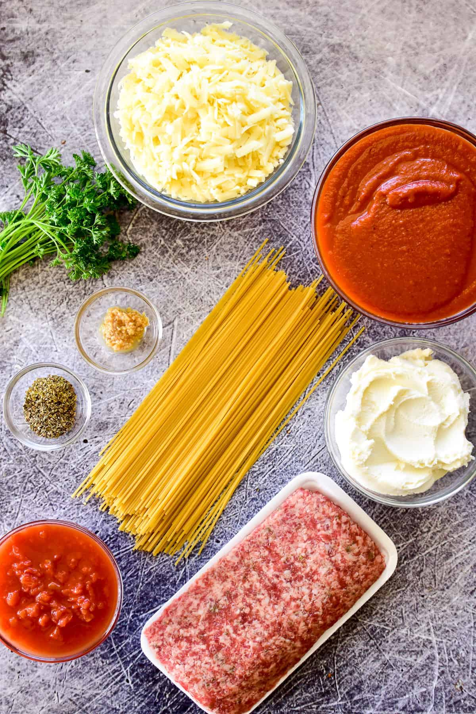
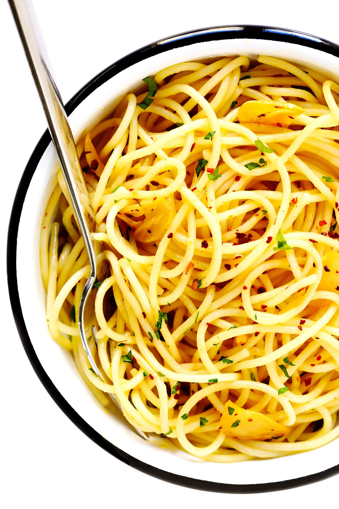

Spaghetti with Meat Sauce
Authentic Italian Style
Authentic Italian Style Spaghetti Sauce simmered low and slow and packed with flavor!

Prep. Time
20 minutes
Cook Time
4 Hours
Total Time
4 Hours 20 Minutes
Servings
8

Ingredients
- 1/4 cup extra virgin olive oil, divided
- 1 3/4 lbs lean ground beef
- 1 medium carrot, finely grated
- 1 cup chopped yellow onion
- 1 1/2 Tbsp minced garlic
- 2 (28 oz each) cans crushed Roma tomatoes
- 1 cup (loose) fresh basil on stems or 1/4 cup chopped basil leaves
- 2 Tbsp chopped fresh parsley
- 1 tsp dried rosemary, crushed
- 3/4 tsp dried thyme
- 1/2 tsp dried oregano
- 1/2 tsp dried marjoram
- 1/2 tsp dried sage
- 2 bay leaves
- Salt and black pepper to taste
- 1/2 cup low sodium chicken broth, to thin then more as needed Finely shredded parmesan cheese, for serving
Procedures
- In a large non-stick sauce pot, heat 1 Tbsp olive oil over medium high heat. Crumble ground beef into pot (approximately 1 inch pieces). Brown beef, stirring occasionally and breaking up beef as you stir, until cooked through. Drain ground beef, reserving 1 Tbsp fat in pot. Place browned beef in a food processor and pulse until finely ground, about 10 - 15 seconds, set aside.
- Saute carrot and onion in reserved fat over medium high heat until golden, about 4 minutes, adding in garlic during the last minute of sauteing. Remove from heat (this will reduce splattering) and stir in 2 cans crushed Roma tomatoes, remaining 3 Tbsp extra virgin olive oil, basil, parsley, rosemary, thyme, oregano, marjoram, sage, bay leaves, salt, pepper and browned beef. Return pot to low heat and simmer uncovered, 5 - 8 hours (yes minimum of 5 hours), stirring occasionally.
- Add broth to sauce to thin sauce if desired (at about 4 hours sauce will be pretty thick so if you want it any thinner just add broth to desired consistency. Also, once it reaches the thickness you want you can cover it with a lid to reduce further condensation). Remove basil leave stems if used, bay leaves and serve sauce warm over pasta garnished with grated cheeses and additional chopped fresh parsley or basil if desired.

Nutritions
Calories: 524kcal | Carbohydrates: 43g | Protein: 29g | Fat: 25g | Saturated Fat: 10g | Cholesterol: 85mg | Sodium: 477mg | Potassium: 438mg | Fiber: 2g | Sugar: 2g | Vitamin A: 49IU | Calcium: 115mg | Iron: 3mg